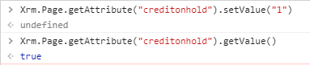
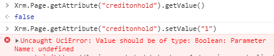
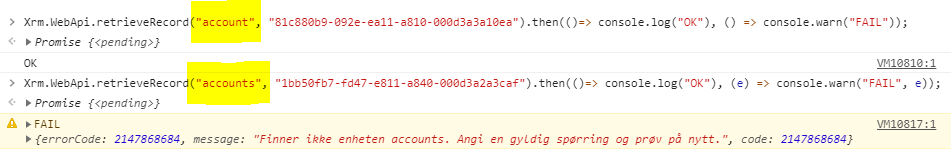
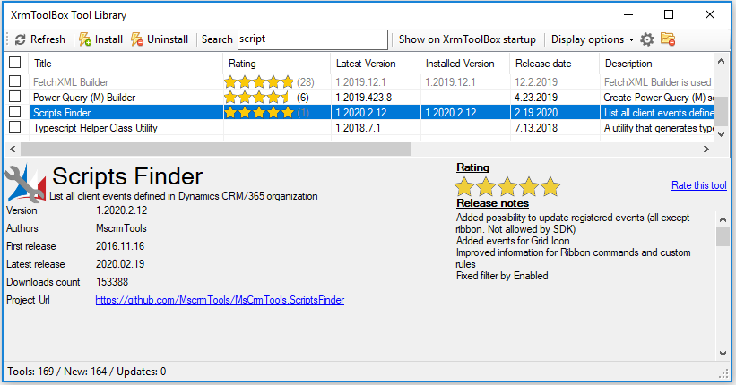
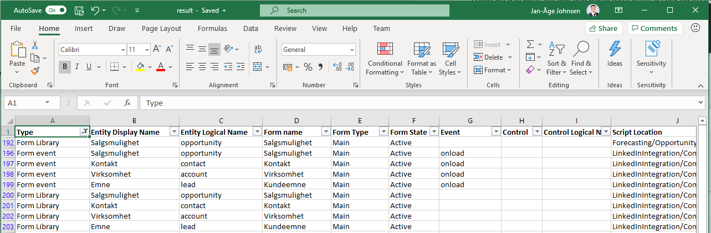
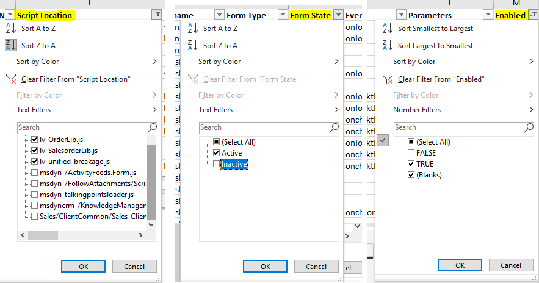
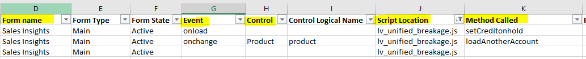
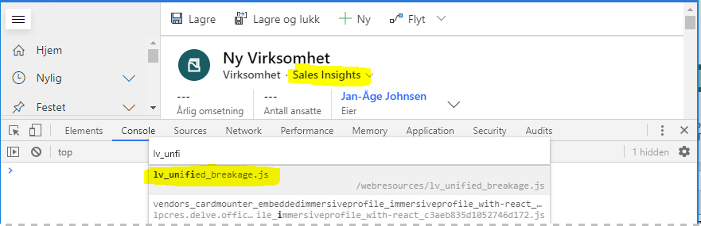
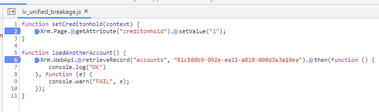
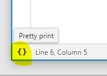

A structured approach to testing JavaScript for the Unified Interface transition
With Microsoft Dynamics 365 final transition date, October 2020, to Unified Interface closing in, it is high time getting your JavaScripts ready for the switch.
If you have large solution, and especially if it’s been developed over several version of Dynamics, the task can be substantial, and a structured approach is indeed needed.
Power Apps Solution Checker doesn’t cut it
While the Solution Checker can provide helpful tips about best practices and future deprecations, our experience so far, has been that it generates a lot of noise, but doesn’t actually catch (subtle) changes that breaks scripts.
On example of this is the setValue function. The old legacy web client is quite forgiving and accepts both string and numbers as inputs for a Two Options field. The new UI, however throws an error if you try using anything but a Boolean.
Setting a two options field with a string in the (now) old legacy client works without problems.

Doing the same in Unified Interface throws an error!

Another example is the Xrm.WebApi.retrieveRecord (and related) functions. The entity logical name is accepted in both singular and plural form in the legacy client. In the new Unified Interface only the singular form is recognized:

The solution checker won’t warn about any of these, or other, problems. So, if you want to make sure that your solution continues to work in Unified Interface, you need to do a proper GAP analyses and really test that your scripts continue to work properly.
Create an inventory of JavaScripts and functions
Before you can start testing, you need to know what lives inside your solution; scripts, functions and the events triggering the functions. The best tool we’ve found for the job is Scripts Finder in XrmToolBox.

Using the tool is quite easy:
- Connect to your organization
- Start Scripts Finder
- Click Find Scripts usage and select For all entities
- Watch the spinner for some time…
- Click Export to csv
- Open the file in Excel
- Use the Data → Text to Columns function if the file content isn’t automatically recognized
- Use the Home → Sort & Filter → Filter command to enable sorting and filtering in the first row
You should now have an almost (more on that later…) complete list of JavaScript usage in your Solution:

Doing some filtering…
As the list contains (almost) all the scripts in the solution you should filter out those which aren’t relevant for your testing.

- Filter out built-in and third-party scripts by opening the filtering drop-down on the Script Location Column and deselect unwanted scripts.
- Filter out scripts on inactive forms in the Form State column.
- Filter out disabled script functions in the Enabled column.
Testing
You are now ready to start testing, which means starting on the top of the list and test each function in Unified Interface.
Going down the list you should make a note of the following columns:
- Entity Logical Name – tells you which entity to test
- Form Name – tells you which form to test
- Event – tells you which event that will triggers the function
- Control – tells you which control (if any) triggers the function
- Script Location – tells you which script to look for
- Method Called – tells you the method you should test
Example testing session for account

Looking at the above image: for the Sales Insights form on the account entity we should test the setCreditonhold function and loadAnotherAccount function in the lv_unified_breakage.js file. (The last line just tells us that lv_unified_breakage.js is added to the form).
Fire up Chrome (or a similar chromium browser) and open the Sales Insights form on the account entity.
Open developer tools and press CTRL-P and search for the script file and select it:

The script file will open breakpoints can be added to the setCreditonhold function and loadAnotherAccount function:

Setting breakpoints will allow stepping though the functions when they are triggered and verify that they work as intended. For functions with branching logic you would typically add breakpoints to each branch and test them individually.
All that is left is to trigger the setCreditonhold function by loading the form and the loadAnotherAccount function by changing the product and wish you:
Happy testing 😊
Bonus tip #1 – Look out for event handlers added through code
The report from Scripts Finder does not include event handlers added through code with addOnChange, addOnLoad, etc. so remember to look for them when going through script files.
Bonus tip #2 – Web resources
JavaScript added to web resources (as files or inline) are not included in the report from Scripts Finder so remember to test them as well.
Bonus tip #3 – Dealing with badly formatted / “minimized” scripts
Chrome pretty print function can help you deal with this:

Originally published on LinkedIn.